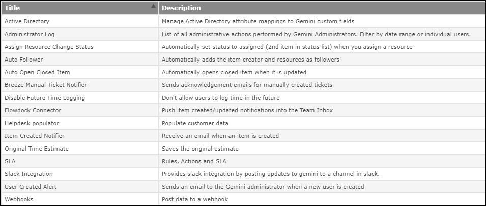

FAQ - Automation in Gemini
Gemini has many methods of automation, which can be combined to produce amazing flexibility. Here we highlight some of the more obvious automation functionality.
Systems Integration
Reading and writing from Gemini
- Gemini has a comprehensive REST Api that you can use to import and export data.
- For reading and writing low to medium volumes of data (without attachments) you can use Gemini's Excel Export from the Grid, its Custom Reporting capability, and its Excel based Import Wizard.
- Gemini supports WebHooks.
- For absolute control over systems integration, you can purchase access to Gemini's Source Code. You must have a 100+ user license and prices start at $5k for single-developer access. Contact Sales@Countersoft.com if you need complete control over the software you deploy in your enterprise.
- You can customize 20+ Open Source components of Gemini, including the Roadmap, Changelog, DocStore, and Checklist Apps. You can also build custom UI Apps, Event Apps, and Timer Apps using our Open Source apps as samples.
- One strategy employed by a number of customers is to use Gemini's ability to convert emails into transactions (usually helpdesk tickets, but they can be anything). Breeze email-to-ticket will ingest anything sent to a mailbox, and Gemini's mailboxes can auto-respond, letting a 3rd party system know not only that a ticket has been created, but what that Ticket Id in Gemini is. With Gemini's customizable Alert Templates, you decide exactly what data appears in an email and what format it takes; you can even write conditional logic in our Alert Templates, which can be project and language specific. You can also use Rules and Actions to conditionally send emails to a third party system, but note that R&A will only ever send ONE email per transaction, so Gemini cannot spam a recipient. That said, if you have the need, Countersoft Support can tell you how that check is implemented and how you might bypass it in code.
System Notifications
We strongly recommend you take heed of all the different ways Gemini can communicate with users, and be careful not to implement methods that overlap. For example, a Follower notification and a Workspace alert can send two emails to the same user that are related to the same change.
Ways in which Gemini can send automated notifications
- Item creation notifications can be sent immediately to anyone creating a new work item, whether that is to the creator or it is to the person on whose behalf the work item was created.
- Resource assignment notifications sent immediately to every user placed in the Resource field. The decision to allow multiple resources per item is a feature that is enabled on a project-by-project basis.
- Workspace notifications - batched or sent immediately depending on the user preference, with a choice to receive notification is items are:
- Created - their data matches the Workspace filter e.g. They are High Priority and as a result are filtered into a Workspace that selects High Priority items.
- Updated - they are changed by someone else. There is a checkbox that is on the User Profile to be notified of changes made by oneself.
- Commented on. This is self-explanatory; however it should be noted that Gemini has a project role "Read Only with Comments" designed specifically to allow customers/external user to comment on items but not to change their metadata.
Specific Automation Functionality
Rules, Actions & SLA
Rules, Actions, and SLA provide user-driven automation. For simple trigger actions e.g. 'if status = x and resource is blank, raise the priority and send an email to y' - use Rules & Actions. For anything that requires testing the passage of time, use SLA. The SLA functionality starts a clock that is either 24 x 7 or limited to working hours, and it can use a working day calendar to avoid the weekend and holidays. SLA does not have to be tied to a commercial contract with a customer, you can just use it to start a clock (as many as you need), so that you can take actions based on the passage of time and any other conditions you wish to test.
Event Apps
Event Apps are like triggers. They fire as soon as an item is created or updated. An example of this is the 'Auto Open Closed Items' Event App, which fires if it detects a change to a closed item and reopens it by setting it to the first non-final Status in the Workflow.
Countersoft have Open Sourced a number of Event Apps (Auto Open Closed Items is one), so you can use them as a basis for creating your own apps, or modify one of the delivered apps to better suit your working environment. Apps are really easy to deploy - the build process places the app and its manifest in a zip file, you place the zip file in Gemini's apps folder, and when Gemini starts it deploys your app.
